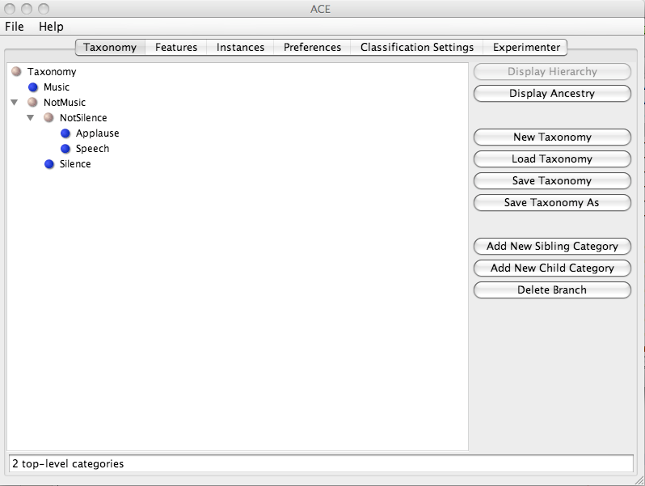
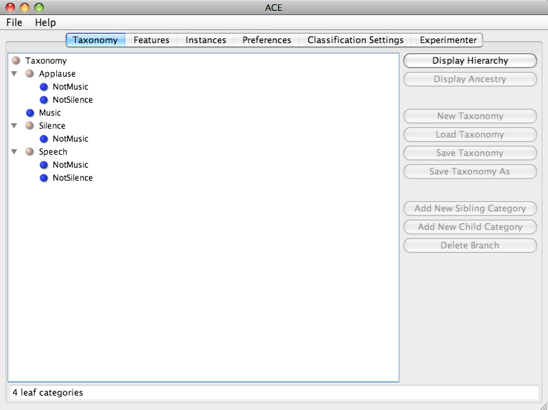

| Taxonomy Panel |
|---|
Overview
This panel displays the class ontology for an ACE project. Ontologies are stored in an ACE XML Taxonomy file. Users are able to view, edit, load, and save class ontologies on which classifications can be based.
Display Options
The currently loaded taxonomy can be seen in one of two views. The default view, called the Hierarchical View, allows users to see a hierarchical tree reflecting the relationships of broad categories going down to narrower categories. The names of these categories may be edited by clicking on them (the return button must be pressed to register changes) or by using the buttons described below. In this view, the status bar displays the total number of top level categories.
The second view, called the Ancestry View, allows users to see the taxonomy in the form of a list of leaf categories. Children of leaf categories represent a list of all ancestors of the given category. Leaf categories that appear more than once in the taxonomy are combined into one under this view (the stored taxonomy itself is not changed) so that all of the combined ancestors are listed together. The taxonomy is not editable in this view. In this view, the status bar displays the total number of leaf categories.
Screen Shot - Hierarchical View
Screen Shot - Ancestry View

Both of the trees in the above two views are sorted alphabetically. The Display Hierarchy and Display Ancestry buttons allow users to switch between the two views. In both views, a beige bullet next to a category means that it has children that can be viewed or hidden by pressing on the handle to the left of the bullet, and a blue bullet next to a category means that it is a leaf category with no children.
Panel Contents
The New Taxonomy button deletes the current taxonomy and creates a new empty taxonomy.
The Load Taxonomy button loads a taxonomy_file ACE XML file into memory and displays it. This overwrites any existing taxonomy. The root node, which has no internal significance to ACE, is given the name of the file.
The Save Taxonomy button saves the currently loaded taxonomy into the path referred to in the File Path Settings dialog box as a taxonomy_file ACE XML file. The Save As button allows the user to choose the path to which the file is to be saved and updates the path in the File Path Settings dialog box. The name of the root node, which has no internal significance to ACE, is not saved.
The Add New Sibling Category and the Add New Child buttons add a new sibling or a new child category to the taxonomy respectively, with a location based on the category that is currently selected by the user. The Delete Branch button removes the selected category and its descendants.
Questions and Comments